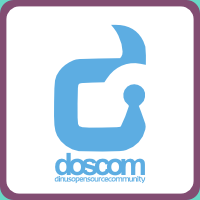

Welcome to DOSCOM
Login
REGISTER
Untuk registrasi, sila hubungi Divisi Jaringan DOSCOM
- anak divisi jaringan / 08123456789
Syarat menyambungkan koneksi hotspot DOSCOM
- Wajib menggunakan Linux
- Untuk Update/Upgrade Linux, di persilahkan menggunakan koneksi lain
Tentang DOSCOM
Dinus Open Source Community (DOSCOM) merupakan sebuah komunitas yang terdiri dari mahasiswa, pelajar dan masyarakat yang aktif dalam penggunaan Open Source Software (OSS). Komunitas ini dulunya bernama Gabungan Linuxer Mahasiswa Dian Nuswantoro (GLADIATOR) yang dibentuk pada tanggal 27 November 2003 oleh Universitas Dian Nuswantoro. Setelah vakum selama 2 tahun, pada tanggal 16 Oktober 2007 DOSCOM aktif kembali dan menjadi salah satu provokator dalam memasyarakatkan dunia Teknologi Informasi dengan Open Source Software (OSS) di Indonesia. Dengan dukungan penuh dari Kementrian Riset dan Teknologi Republik Indonesia dan Jawa Tengah Open Source Center, DOSCOM dengan misinya memasnyarakatkan open source dan mengopen-sourcekan masyarakat bertekat kuat untuk berbagi, dan menyebarkan ilmu open source kepada masyarakat.
Email :
sekretariat@doscom.org
Twitter :
@doscomedia
Facebook Group :
http://facebook.com/group/doscom
Facebook Fans Page :
http://facebook.com/doscom
Sekretariat :
Jalan Nakula 1 No 5-11 Semarang, Gedung D Lantai 1 UDINUS
Event DOSCOM
Ngoprek rutin
Jum'at, 19 Juli 2013. 10.00 wib
DOSCOM Jalan-jalan
Jum'at, 19 Juli 2013. 10.00 wib
DOSCOM Sharing Time
Jum'at, 19 Juli 2013. 10.00 wib
DOSCOM Ngabuburit
Jum'at, 19 Juli 2013. 10.00 wib